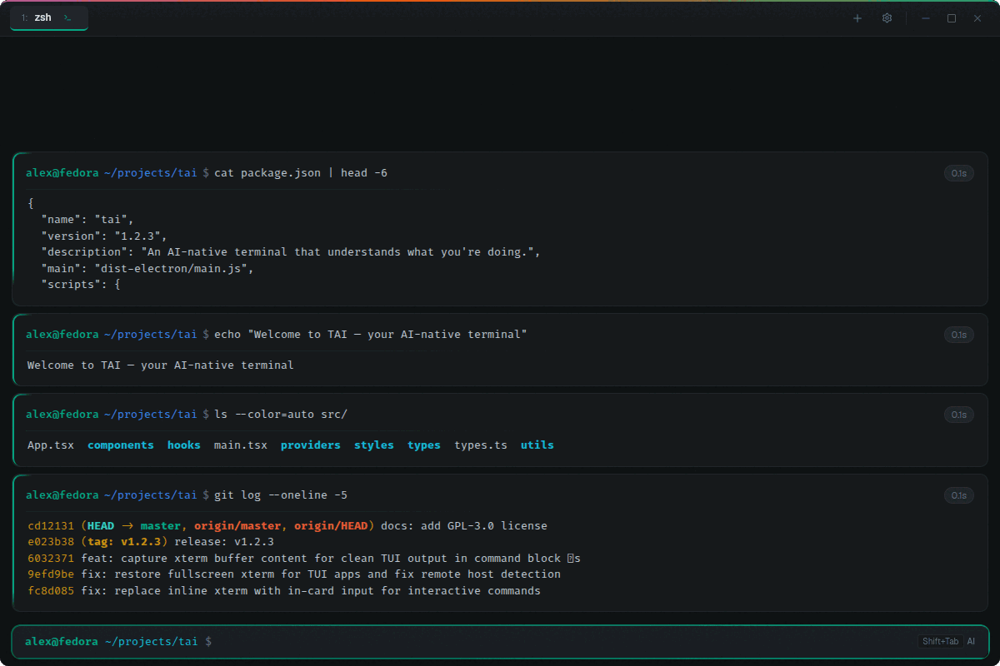
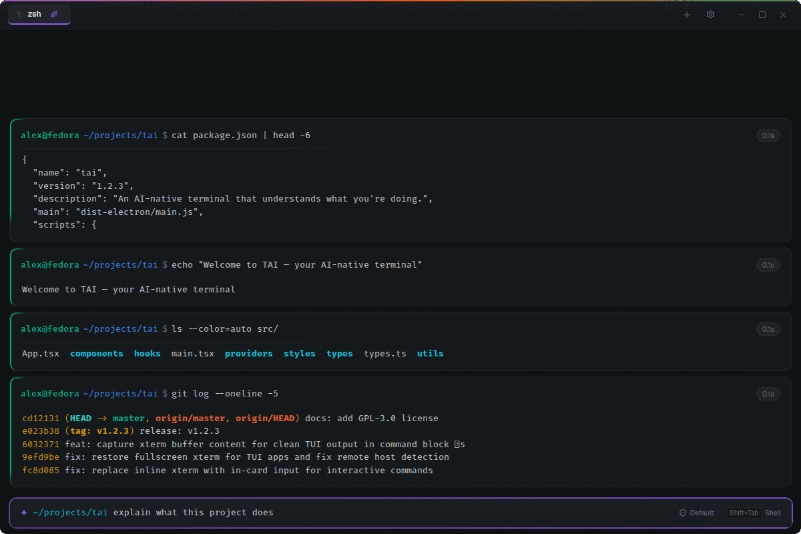

Natural language, right in the prompt
Start typing — TAI auto-detects shell vs. question. Shell runs. Questions go to Claude. Shift+Tab overrides.
Type a command, run it. Type a question, get an answer. No mode switching, no separate windows, no copy-pasting. TAI figures out which one you meant.
Six things that disappear into your flow once you have them.
Start typing — TAI auto-detects shell vs. question. Shell runs. Questions go to Claude. Shift+Tab overrides.
Every AI command shows before it runs. Enter to approve, E to edit, Esc to reject. Configurable trust levels.
TAI learns your shell history and predicts as you type. Tab or → accepts. Cycling tab-completion popup included.
Commands and output become discrete blocks with timing, collapsing, ANSI color, and Markdown-rendered AI replies with copy-to-clipboard code.
Open multiple terminals as tabs — each with its own working directory, context, and trust level. Ctrl+1-9 to jump.
Close the window — TAI keeps running. Click the tray icon to bring it back. Tray icon adapts to your system theme on Mac and Windows.
Block-based output for shell commands. Markdown for AI. Both, side by side.


Mouse optional. The whole product is reachable from the home row.
Grab the AppImage, or build from source. TAI uses the Claude CLI as its AI backend — install it first.
Latest AppImage for Linux:
curl -L https://github.com/darkharasho/tai/releases/latest \
-o tai.AppImage
chmod +x tai.AppImage
./tai.AppImageFirst, install the Claude CLI and authenticate it.
Node 20+ recommended.
git clone https://github.com/darkharasho/tai.git
cd tai
npm install
npm run dev # development
npm run dist # build distributableReleases are built and signed in CI on every tag.